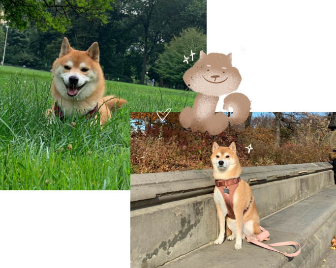

Meet Teddy, the shibe.
My inspiration for this project started with Teddy, my lovely doggo. After many trials and errors, I could not understand his food preferences, resulting in many
instances when he got diarrhea from my mistakes. I realized that humans had projected their perception onto dogs while researching Snoop. Smells are sharper in dogs than in taste buds. Dogs are not as proficient at tasting as
humans are. Hence, we learn more about our furry friends through their noses than from our projected perception of taste.
I hope that Snoop will introduce us to the scents that food and the environment offer and make us more attentive to them. This project involves two components. In
the first step, we smell the food we feed dogs with the confident knowledge that ingredients are safe or toxic. The nose allows us to get closer to how dogs see the world. The second feature is that Snoop provides you with a
map
of the aromas of your local dog parks. In this way, you can venture out and enjoy exercise with your dogs simultaneously.
We can provide our fur babies with a complete sensory experience through daily meals and exercises.